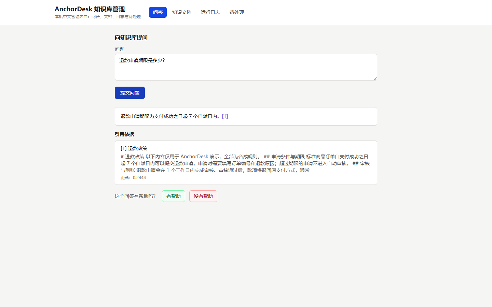
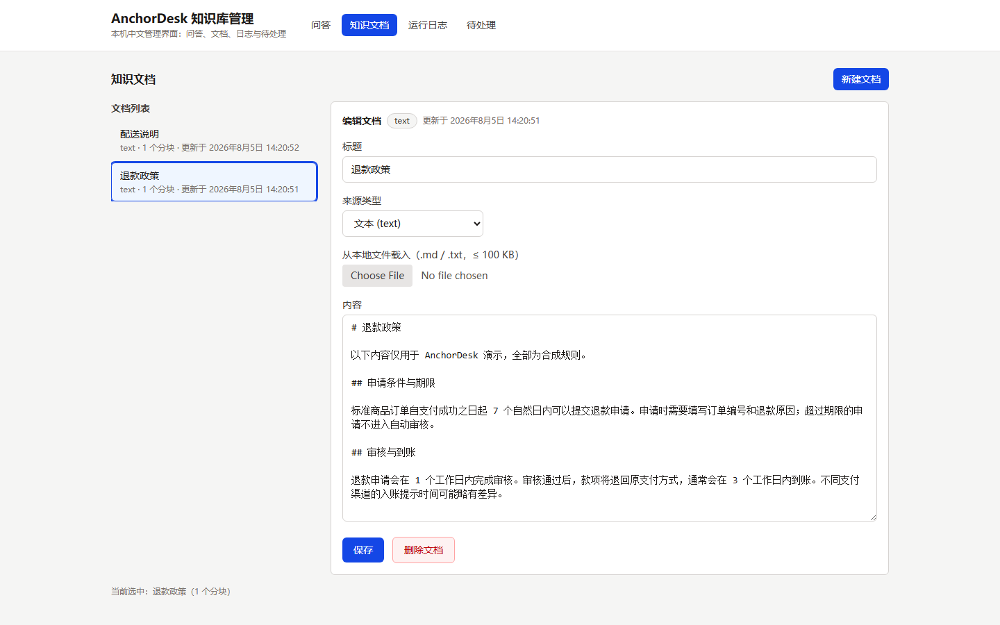
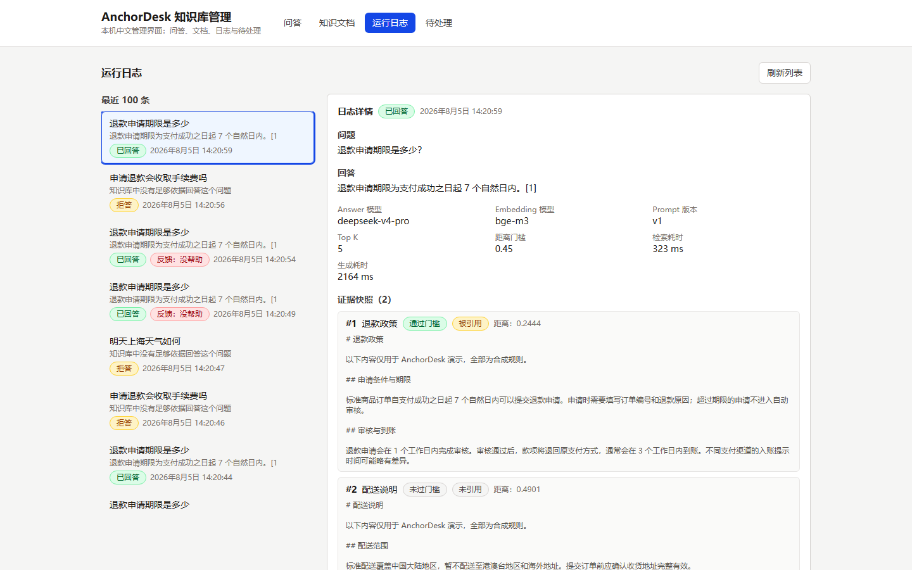
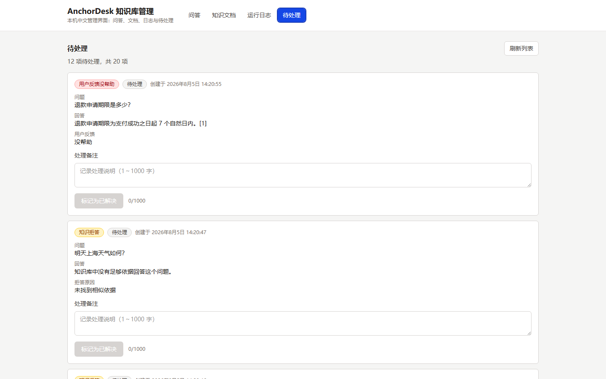

项目简介
AnchorDesk 演示一条完整的本地化 RAG 链路：中文文档分块与向量化 → pgvector 相似度检索与距离门槛过滤 → DeepSeek 结构化生成与引用合同校验 → 原子化日志与证据快照。系统不会伪造回答：检索不到依据或模型没有足够依据时返回确定性拒答， 并自动进入“待处理”审核队列。
系统仅供开发者本人本机运行，所有服务只监听回环地址，不支持局域网或公网访问， 只允许录入合成数据或公开数据。
MVP 功能
- 中文文档管理：创建、列表、详情、连续编辑（乐观并发校验）与删除，自动分块与向量索引；支持 .md / .txt / .docx 文件上传与解析质量门控（.pdf 需可选部署 MinerU，含扫描件 OCR）。
- 单轮问答：中文问题 → 检索 → 生成；答案含行内引用，可点击定位证据卡片。
- 确定性拒答：知识库为空、距离超门槛、模型主动拒答、模型输出不合法，均返回固定拒答文案。
- 用户反馈：“有帮助 / 没有帮助”提交后锁定；“没有帮助”自动进入待处理队列。
- 待处理审核：拒答与“没帮助”两类项目、备注（1–1000 字）、标记已解决、已解决只读。
- 运行日志：最近 100 条摘要（不泄露完整正文）、详情与全部候选 hits 快照，审计快照不可变。
技术栈
- Web：React 19、Vite 8、Tailwind CSS 4
- API：Node.js、Fastify 5、TypeScript
- 数据库：PostgreSQL 16 + pgvector（1024 维余弦距离，HNSW 索引）
- 向量模型：Ollama bge-m3（本机）
- 生成模型：DeepSeek（结构化 JSON 输出）
- 测试：Vitest、Playwright、oxlint
系统架构
React Web │ ▼ Fastify API ─── Ollama bge-m3 │ ├────────── DeepSeek │ ▼ PostgreSQL + pgvector
Web 只与本机 API 通信；API 负责文档服务、问答编排、反馈与审核；Ollama 仅在本机提供
bge-m3 向量嵌入；DeepSeek 仅由 API 调用，会接收到当前问题和检索到的证据片段。
单轮问答流程
中文问题 → 生成问题向量 → pgvector 相似度检索 → 距离门槛过滤（RAG_MAX_DISTANCE=0.45） → DeepSeek 结构化生成 → 引用合同校验 → 回答或确定性拒答 → 保存日志与证据快照
每次提问独立，不携带会话历史；删除或编辑文档不会破坏历史日志中的证据快照。
页面截图
以下截图来自通过真实人工验收的本地应用，只展示合成数据。




测试与评测摘要
- 单元测试 24 文件 / 205 用例；集成测试 7 文件 / 94 用例；Playwright 浏览器 E2E 3 条流程（完整链路、docx 上传、pdf 上传）通过。
- 固定评测集：6 个可回答问题、2 个生成阶段拒答、4 个检索阶段拒答。
- 真实 Ollama 检索评测：12/12；最终门槛
RAG_MAX_DISTANCE=0.45。 - 真实 DeepSeek 生成评测：12/12（仅由显式命令
npm run eval:generation调用，可能产生费用）。 npm run verify全流程通过，且不调用真实 DeepSeek。
本地运行
请按 README 的“从空环境启动”章节执行；简要步骤：
- 复制环境文件并填写
DEEPSEEK_API_KEY（Copy-Item .env.example .env）。 npm ci、docker compose up -d postgres postgres-test、ollama pull bge-m3、npm run migrate。- 两个终端分别运行
npm run dev:api与npm run dev:web。 - 浏览器访问
http://127.0.0.1:5173。
本地端口：Web 127.0.0.1:5173、API 127.0.0.1:4000、开发 PostgreSQL 5434、测试 PostgreSQL 5433、Ollama 11434、MinerU（可选）8000。
完整文档见 GitHub README。